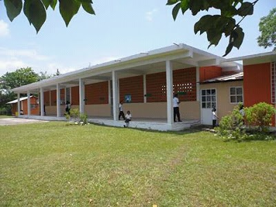
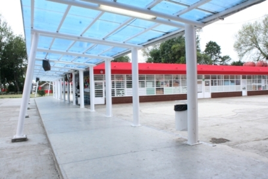
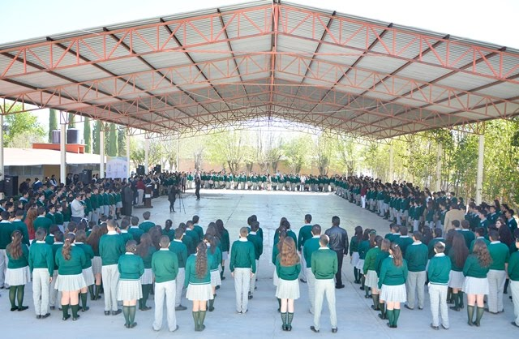
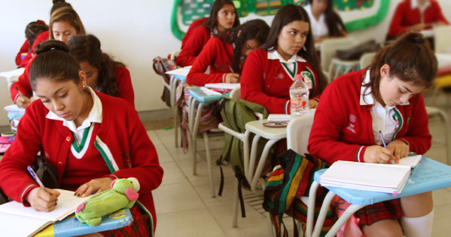
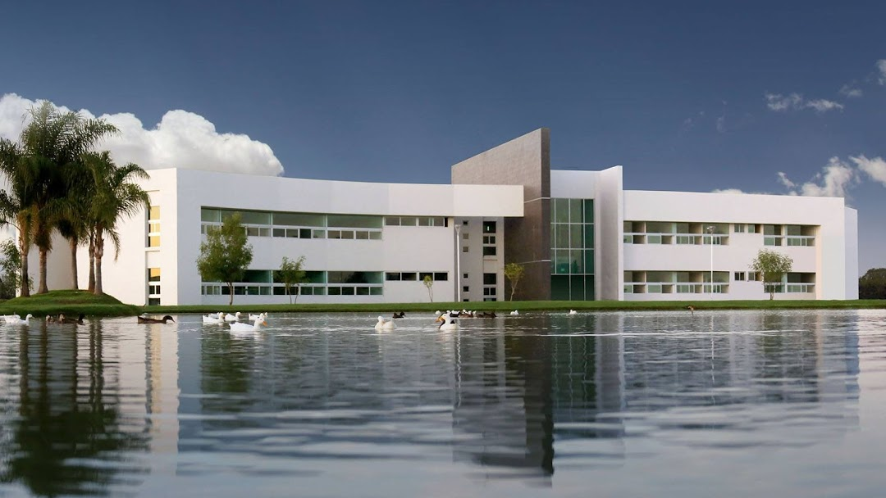

¿En qué lugares estudié?
Jardín de niños Leopoldo Kiel
Centro, Jesús Gómez Portugal, Ags.
Escuela primaria Carlos A. Carrillo
Escuela Primaria Carlos A. Carrillo, Calle Alegría 218 Jesús Gómez Portugal, Ags.
Secundaria Francisco J. Múgica
Calle Nueva 303, Jesús Gómez Portugal, Jesús Gómez Portugal, Ags.
Cecytea San Francisco de los Romo
Av Otto Granados Roldán 711, Hidalgo, 20303 San Francisco de los Romo, Ags.
Universidad Tecnológica del Norte de Aguascalientes
Av. Universidad #1001, La Estación Rincón, El Potrero, 20400 Rincón de Romos, Ags.
Metas
Mis metas a cinco años
En los siguientes cinco años espero haber conluido mis estudios universitarios y tener un buen puesto en una empresa del ramo de software.
Mis metas a diez años
En los próximos diez años espero ya no depender tanto de mi empleo para sobrevivir sino más bien tener otras fuentes de ingresos.
Mis metas a veinte años
En los siguientes veinte años tengo como meta crear algún producto o servicio, es decir, una empresa relacionada con lo que estudié en la universidad para así no tener que ser más un empleado y hacer lo que me gusta.
Cosas que más me gustan de mi carrera
- Desarrollo web: esta es el área que más me llama la atención por ahora, es a la que le dedico tiempo a aprender cuando no estoy en clases formales y es a lo que me quiero dedicar.
- Bases de datos: esta es otra area en la que me gustaría profundizar más ya que creo que es importante junto con desarrollo web para tener bien las bases del fronten y el backend.
- Cálculo diferencial (matemáticas): creo que si sabes matemáticas tienes unas muy buenas bases acerca de pensamiento lógico y analítico, lo cual te sirve para el área de desarrollo.